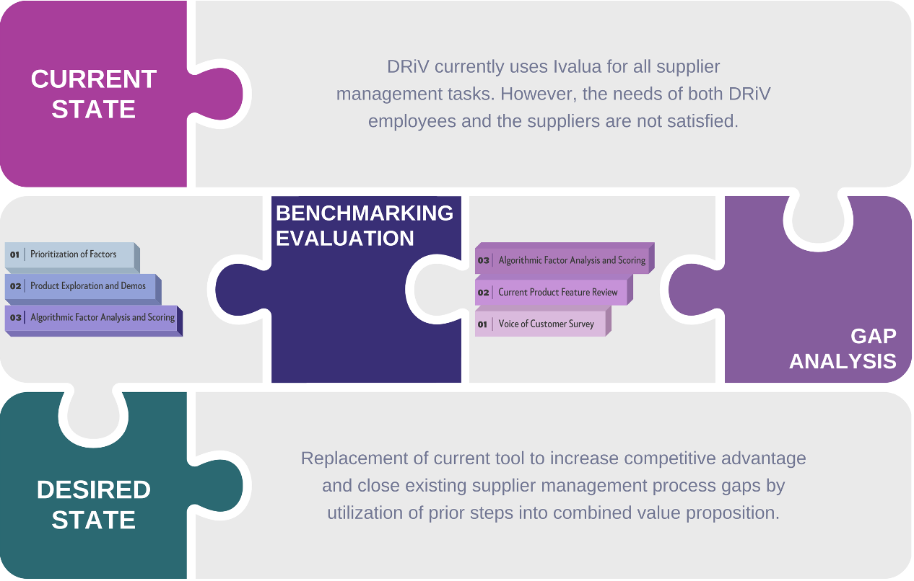
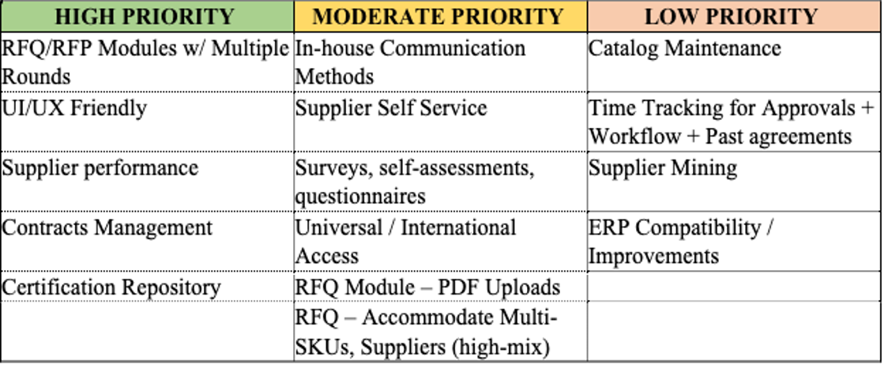

After many mini-projects in front-end web development, this portfolio autobiography has been the most substantial project I have utilized web development languages and Github for. Keep up to date on my self-taught adventure by checking out the repository.
Supplier Data Management for a Global Automotive Aftermarket Enterprise

[from left to right] Matthew Segall, Julia Martin, Zach Samp, Mikayla Norton, Nathan Harville, Isabella Rodrigues
When transitioning between supplier management software platforms, what acts as the strongest criteria?
As part of the requirements for undergraduate Applied Engineering students, a corporate-sponsored, technical capstone must be completed to showcase the development of skills throughout the duration of education. DRiV, the aftermarket product solutions group of Tenneco, chartered a project with our capstone team to find a new data storage system for supplier management.
DRiV, the aftermarket product solutions group of Tenneco, has utilized Ivalua as a cloud software platform for supplier management as a standard operating procedure. For the automotive aftermarket group, features of an end-to-end supplier integration process are crucial in success, including contract procurement, scorecards, and performance management. The supplier management team at DRiV recognized shortfalls in the current process, originating in the choice of software platform. DRiV sought out the Michigan State University capstone team to consult on the evaluation process of the current supplier management state, as well as advise on potential replacements to fill in the gaps. The final design proposal will enhance the competitive advantage of DRiV and enforce continuous improvement of the procurement processes.
The realization of the final process improvements was achieved through frequent milestone deliverables throughout the semester. These milestones included the benchmarking of various competitors in supplier management, a gap analysis of the current state, and the fusion of both evaluations to generate the final value proposition of new supplier management software. The full process diagram for project milestones is displayed in the figure below.

The benchmarking portion of the design project featured the evaluation of eight different platforms for supplier management across a collection of factors in varying priority. The gap analysis included the assessment of Ivalua under the same factors from benchmarking, as well as voiced opinions from current stakeholders. The final deliverable included a streamlined proposal, driven by data from the prior milestones, to highlight the topmost compatible replacements for the current state.

As shown in the figure above the benchmarking evaluation considered factors ranked as high, moderate, or low priority, scored each on an individual basis, and implemented a weighted tabulation to generate a percentage compatibility for each platform with the overall needs of DRiV purchasing. The same process was implemented on the current state platform, including information from a “voice of customer” survey, to compare performance between current usage and competitors. The formula used for calculating overall compatibility is shown below
Prior to submission to the project sponsor, the capstone team also worked to eliminate scoring biases, conducting a sensitivity analysis of the tabulation.
At the conclusion of all milestones within the project, the capstone team proposed replacement of Ivalua with SAP Ariba. SAP Ariba is considered a leader in supplier and spend management software. The team found this platform to best meet the technical needs of DRiV, including contract management, in-house communication methods, Request for Quote (RFQ) features, accessibility, and others features.